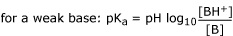
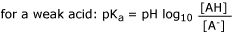

An important complicating factor here is pH. Most drugs are either weak acids or weak bases and the degree of ionisation will depend on pH. The ionised form of the drug is usually insoluble in lipid so it will not cross membranes. The lipid solubility of the unionised form is a property of the drug but is usually much greater than that of the ionised form. The dissociation constant, pKa is an important concept. It is given by the Henderson - Hasselbalch equation:


ie, the pKa is the pH at which the drug is 50% ionised.
A weak acid usually has a low pKa eg aspirin - 3.5, a weak base
usually has a high pKa eg pethidine 8.6. This has practical applications
if the
pH on
each side of a membrane is different.
Inside a body compartment, the ionisation of a drug is determined by the pH and pKa. Where the pH varies across a membrane, eg plasma pH 7.4 and gastric contents pH 2, the degree of ionisation will be different. Since only the unionised form can cross the membrane, it will diffuse down the concentration gradient to the other side of the membrane where most of it will become ionised and thus trapped. Thus a weak acid (such as aspirin) will move out of the gastric juice and into the plasma.
A weak acid will accumulate in a compartment with
high pH, a weak base will accumulate in a compartment with low pH. This can
be useful to increase the concentration of drugs in various sites, eg milk
pH 6.8, inflammatory exudate pH variable but acid, urine pH can be
altered as required.

Ion trapping of a weak acid (pKa 4.4 to make the arithmetic simple) encourages movement across the gastric lining. This can be important with aspirin like drugs.